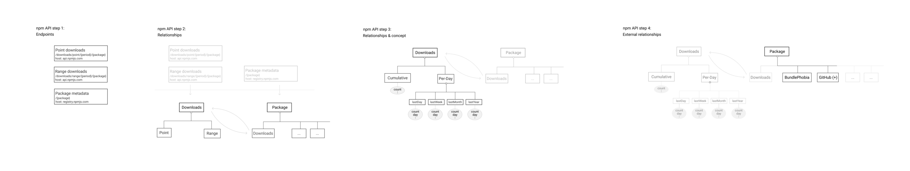

Or, the power of shutting up and listening.
[Omitted for this audience]
Dozens of people productionizing a REST→GraphQL migration with a common narrative:
3 principles:
At each step along the way, it's best to ask yourself:
[Maximal power]: Will this provide the maximum power permissible to the consumer, so they can handle unforeseen demands as independently as possible?
[Minimal cost]: Will this impose the minimal cost on the consumer in terms of graph structure, verbosity, tooling, and documentation?
[Constant success]: Will this design decision maximize the chance the consumer is always in a successful state, in terms of correctness and performance?
Example 1: GitHub's first / last pagination
Example 2: npm's downloads design
… porting it 1:1 will be a missed opportunity!
A journey with npm "REST"-ish API to GraphQL

npm has ~four endpoints on two hosts:
https://api.npmjs.org/downloads/point/{period}[/{package}]Cumulative downloads for a given period ("Point values")
https://api.npmjs.org/downloads/range/{period}[/{package}]Downloads broken down per-day for a given period ("Ranges")
https://api.npmjs.org/downloads/range/{period}[/{package}]
Both endpoints return a similar structure:
// Common structure returned from both endpoints
{
"start": "date",
"end": "date",
"package": "string"
}
// `downloads` is an integer in the "point" (cumulative) downloads endpoint
{
"downloads": "integer",
}
// `downloads` is an array of downloads by day in the "range" endpoint
{
"downloads": [
{
"day": "date",
"downloads": "integer"
}
]
}
From these three endpoints so far, we can imagine there are two top level concepts consumers are ultimately looking for:
`downloads`)`package`)> Note: It’s normal for multiple endpoints in REST to boil down to fewer concepts in GraphQL
A naive approach would be to mimic the concepts and endpoints exactly.
Just like the original API endpoint, we could parameterize our downloads field with a required dateIsh argument, and an optional packageName argument.
Similarly the package endpoint would be parameterized by a required name argument.
But let's not do that.
Let's judge it according to our three goals:
How closely does this design achieve our three goals:
Let's improve on the third point, while trying to either maintain or improve on the first two!
{
npm {
downloads {
lastMonth {
count
perDay {
day
count
}
}
lastDay { ... }
lastWeek { ... }
day { ... }
period(
endDate: "2019-01-01"
startDate: "2019-12-01"
) { ... }
}
}
}
> REST endpoints that share exactly the same arguments often share a deeper relationship that’s worth modeling explicitly in your GraphQL API structure
The package metadata host/endpoint returns package name, homepage, source repository, etc.
name argument.author, description, homepage, etc.{
npm {
package(name: "graphql") {
author {
name
}
description
homepage
downloads {
lastMonth {
downloads
perDay {
day
count
}
}
}
}
}
}
npm's data is wonderful, but they’re not in a position to also add related external data.
But this is GraphQL, and we can - in fact, we should!
Bundlephobia > Bundlephobia is a wonderful service by @pastelsky to find the cost of adding an `npm` package to your bundle, because JavaScript bloat is more real today than ever before.
{
npm {
package(name: "graphql") {
name
bundlephobia {
dependencyCount
version
name
history {
dependencyCount
size
version
}
}
}
}
}
> GitHub is an up-and-coming little startup that's pretty nifty for hosting source code
:P
npm's package metadata has a repository field with e.g. "repository":
{
"type": "git",
"url": "http://github.com/facebook/graphql.git"
}
Can see that it's a repository hosted on GitHub, so let's add a connection called sourceRepository
What could be better than querying into npm and joining GitHub’s repository data to get the stargazer count, the open issues, and most recent commit data? So cool!
But what if the repository is on Bitbucket or GitLab?
We don't have those in our graph today, it's maybe someday!
Let's make this field a more "open" type than the bundlephobia field.
sourceRepository extensible for future use, we'll create a union typeGitHubRepositoryWith that in place, our consumers can jump from a npm package right into GitHub to get the number of open issues with this simple query:
{
npm {
package(name: "graphql") {
name
repository {
sourceRepository {
... on GitHubRepository {
name
issues(states: CLOSED) {
totalCount
}
}
}
}
}
}
}
Happy to talk about examples of this
[Demo]
Thank you!